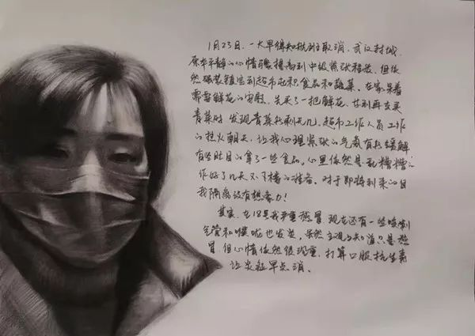
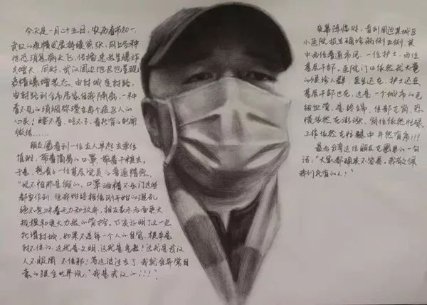
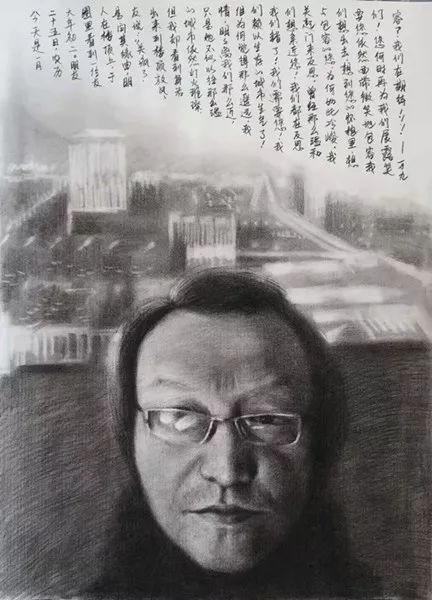

我与武汉同在
原文链接 备份链接 请你相信我，相信武汉，相信不信邪的武汉人，一定会战胜凶猛的病魔，迎来一个清洁健康的春天。 （据本文作者的诗作《答关心武汉和我的朋友们》制作的公益宣传片） 最早听说武汉出现冠状病毒性肺炎，是2019年的最后一天。那天上 …
在家中，几只铅笔和几张素描纸相伴，我选择用画画，记录下这特别的日子……

自1月23日，腊月二十九，武汉，一座美丽而繁华的中部之城，因为疫情，每个人心头都压着重重的阴霾。在这样的情况下，也是为了能有精神支撑，度过难熬的孤独时间，于是开始通过画笔记录不同人群的心态和遭遇。
画里有我、一线医护人员家属、普通隔离群众、一线医护人员、基层党员，还会有快递人员、清洁工、一线执勤人员……我们都是芸芸众生，此刻在武汉，过着最真实的生活。此时此刻，这一切还带着心悸，带着呼吸之间的温度，带着失落与希望……
1月23日

一大早得知航班取消。原本平静的心情骤然提高到中级紧张程度，但依然强装镇定到超市购买食品和蔬菜。在家呆着需要鲜花的安慰，先买了一把鲜花，等到再去买青菜时，发现所剩无几。超市工作人员工作得热火朝天，让我的心理紧张有所缓解。有些盲目地拿了一些食品。心里依然是乱糟糟的，做好了几天不下楼的准备。
其实，在18号我严重感冒，现在还有一些咳嗽，气管和喉咙也发炎，虽然主观上知道只是感冒，但心情依然很沉重，打算口服抗生素，让炎症早点消除。
1月24日，年三十
从今天一睁眼，发现事态变得相当严重。昨天还是中度的焦虑，但今天心火烧起来了，感到前所未有的恐慌！
我一个同学的儿子和儿媳都在医院一线，以下摘录几条他的微信留言：
我从没因为公共事件担心过，这次真的焦虑了，因为涉及到儿子他们的职业。他们医院不仅有确诊病例，而且现在疑似病人爆满。
怎么可以让他小夫妻俩都参加一线战斗呢？要是能上战场，真枪实刀地干，要我们上去，我真的毫不犹豫！偏偏是这样的事，而且让一帮孩子冲锋陷阵……他们就是一帮还没完全独立的孩子啊！连保护自己的装备都不能保证！
我不知道该说什么，只能将同学和我说的话讲给大家听，致敬那帮白衣天使！
1月25日，农历大年初一

武汉的疫情发展持续紧张，同时，武汉周边地区也呈现爆增状态。一股看不见的硝烟弥漫在每个人的心头……
朋友圈看到一位友人早起去单位值班，戴着简易的口罩，带着干粮，于是，想看看一位基层党员的普通情感。
“说不怕那是假的，口罩酒精不出门这些都要做到，但我始终相信刚开始的混乱绝不意味着无力和放弃，相反表示后面更大规模和更大力度的管控。事实证明了这一点，所谓封城，如果不是每一个人的自觉，根本是封不住的。这就是文明，这就是气度！这就是武汉人不服周，不信邪！等这波过去了，我就会异常自豪地跟全世界说：‘我是武汉的！！！’”
夜幕降临时，看到周边某城区校医院报告确诊病例五例，其中两位普通市民、一位护士、两位基层干部。医院门口依然有大量的候诊人群，医生还在，护士还在，基层干部也在。这是一个城市的毛细血管，是终端，但都在岗。恐慌依然在膨胀，岗位依然忙碌，工作依然在忙碌中井然有序！
最后分享这位朋友在朋友圈里的一句话：“大家都确实不容易。我敬佩我们所有的人！”
1月26日

农历大年初二。朋友圈里看到一位友人在楼顶上，于是问其缘由。朋友说：“出来到楼顶放风。”但我却看到身后的城市依然灯火璀璨，只是她不似以往那么温情，明明离我们那么近，但为何觉得那么遥远？
我们赖以生存的城市生气了！我们错了！我们需要您！我们想亲近您！我们都在反思，关起门来反思，曾经那么温和与包容的您，为何如此冷峻。我们想出去，想到您的怀抱里，想要您依然面带微笑地包容我们！您何时再为我们展露笑容？我们在期待！
1月27日

时间很快，今天是农历大年初三了。在朋友圈里看到一则留言：“我们都在一线，现在都不敢回家看孩子，除了上班就是自我隔离。”我知道这夫妻二人都在医院一线，孩子高三，正在备战高考，但在疫情面前，依然选择站在一线！
图上的这位医务人员去密切接触者家里，该家庭有成员已确诊。医务人员进行流行病学调查与身体检查及指导密切接触者居家隔离消毒。我看到最坚定的眼神和最美的手势。在真的战场上，所有所谓精湛的表演显得多么苍白啊！
1月28日

1月28日，第六天。早晨起床时看到了久违的太阳。近二十多天阴雨夹雪，终于看到了耀眼的阳光，压在心头的疲惫似乎也减轻了一大半，画画的时候也更流畅了。站在阳台上，看到远处的大路上似乎有了人在走动，有人在家压抑太久，开始出来散步……下午三点整收到紧急通知：有因散步全家感染病者。阳光啊！为何没能庇护热爱您的人们啊！
但是，我亲爱的城，我们是您的孩子啊！
晚上8：30，我们的城在这一刻全部亮起萤火般的光，在闪烁的光里，全城高唱《我的祖国》，全城高喊“武汉加油！”“中国加油！”夜空中回荡着，回荡着，回荡着……
关于我们：
本公众号乃上海发行量最大的报纸《新民晚报》副刊《夜光杯》的官方微信，《夜光杯》是中国历史最悠久的报纸副刊，在微信平台，我们将以全新的面貌继续陪伴您。欢迎免费订阅，我们将每日精选两篇新鲜出炉的佳作推送到您的手机。所有文章皆为《夜光杯》作者原创，未经允许不得转载。
点击下面的篇目链接，可重读夜光杯微信公众号12月高点击率美文：
原文链接 备份链接 请你相信我，相信武汉，相信不信邪的武汉人，一定会战胜凶猛的病魔，迎来一个清洁健康的春天。 （据本文作者的诗作《答关心武汉和我的朋友们》制作的公益宣传片） 最早听说武汉出现冠状病毒性肺炎，是2019年的最后一天。那天上 …
原文链接 备份链接 童言是生活在新加坡的三明治专栏作者。自1月23日确诊第一例“新型冠状病毒肺炎”病例以来，目前新加坡已确诊18个病例，在海外确诊数据中排名第三，仅次于日本、泰国。 这场“肺炎”疫情牵动着许多在海外中国人的心绪。华人群体 …
原文链接 备份链接 今天是武汉封城后的第十二天。 仍旧是完全宅在家里的一天。 马上就是封城两周，但拐点似乎还远远没有到来。武汉之外，或者说湖北之外的区域数据看来是暂时问题不大，但专家仍旧提醒要注意宅在家里一段时间，以防功亏一篑。 绝大部分 …
原文链接 备份链接 隔离就是战争！战争必须让愚蠢无知廉价的爱与情走开！ 2020年1月22号夜，武汉三镇，这夜注定无人入睡，或者，很难入睡。 这是一个非常的夜晚，在将近23点的时候，单位突然来电话，紧急通知：从明天起，武汉市民实施隔离。也 …
原文链接 备份链接 如果没坚持更新日记，很难相信距离宣布封城已经过去12天，很多地方陆陆续续开工，我同学证券公司工作，开市后在家办公，也坦白脑子没完全适应复工的节奏，“打开公司电脑有种恍若隔世的错觉，然后看着大盘垮得一塌糊涂”。我们单位下 …